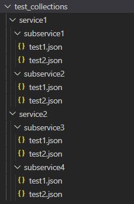
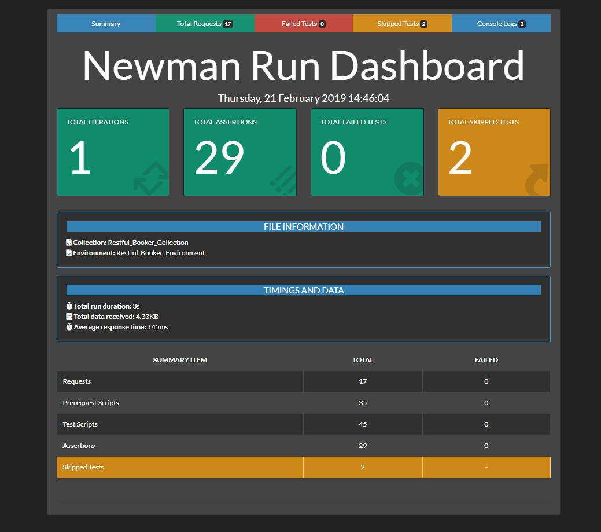
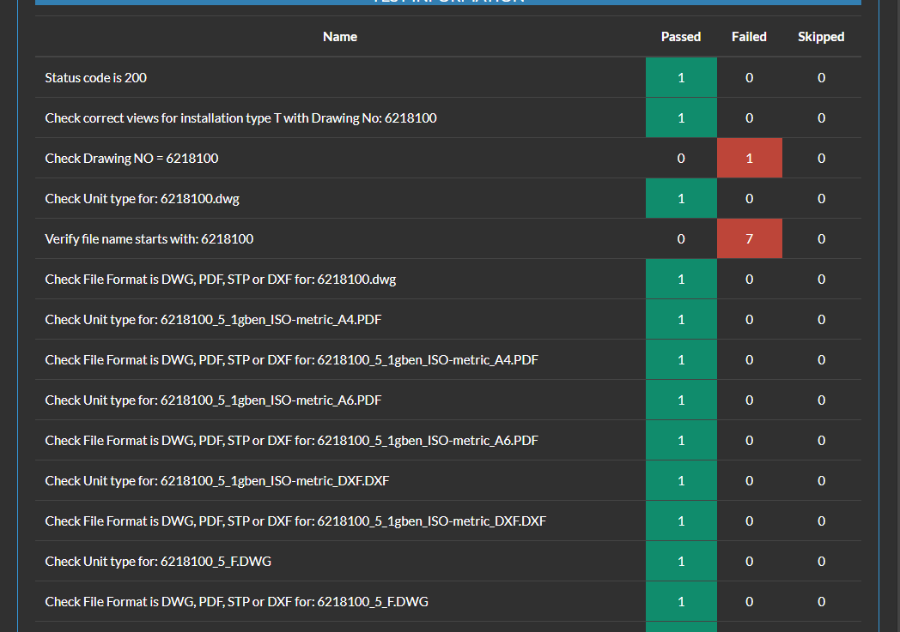

Software Developer at CGI (May - Dec 2021)
In May 2021, i was hired at CGI as a software developer and planned to work on an
8 month term up to December. Although it was all work from home up to now, this has
not stopped me from constantly learning and developing many aspects of my skillsets
while at CGI.
What i've done so far?
The first two weeks of work was actually rather slow in terms of doing actual
work. Instead, this time helped me understand the basic workflow of my team,
observe how each team member fills specific roles and overall learn about
the vision of the company. Then, after the first few weeks of ramping to the
skill level required, i began taking on a few tasks here and there. The first
few tasks i got was to test their software they were building. (Just a quick note for the reader who might not be aware
of the workflow of developing software - first we have the development phase, then comes the testing phase).
The team of testers consisted of 4 persons including me and i got to learn a lot from each
one of them. They gave me advice and showed me best practices regarding testing of software.
I was part of that testing phase for about a month, before moving on to the actual
development of the app. Development is usually a bit more challenging but since i was
already proficient in the programming language they were using, it did not take me long to
adjust to their code base.
Work Samples
At the time that i started on the testing team, they were actually facing
some issues where the testing phase was taking too long and too much manual
effort was required from the team members. Hence, they wanted to automate the
testing process and asked me if i could be in charge of automating the process.
I made some research and found a third party testing tool called "Newman" which
does exactly what we need automated testing. Initially i thought it was that easy
and i didn't have to write additional code for it to work. However, there was some limitations
to this tool where it could run only one test file at a time, which is not very ideal since the
company had a huge database of such test files. It was then that i had
to use my programming knowledge to build a program on top of this existing "Newman" tool. I had to code
some additional logic of my own to make it work on a big database of test files that
the company had.

This image is an example of how their test collections database looked like. Basically
the program i develop will continuously search each subfolder until as long as there is more
nested levels. Once it reached the last levels where you can see the test1.json, test2.json files,
it will take those, merge them together and bring them at the root folder called "test_collections".
After doing this process on all folders namely the service1 and service2 folders, we end up with a big
collection of tests merged together into a single file, which was the limitation of that "Newman" tool.
In other words, i'm still feeding the "Newman" tool a single file to run but that file contains the entire
test collection database that the company had.

This image is the report page that the "Newman" tool will output after running the tests. Here, you can see
some very valuable data that the company will use in order to know how their app is performing, based on the
number of tests it is passing or failing.

This image is a more in-depth view of which tests passed or failed.
Reflecting on my work term goals?
Some initial goals set:
- Improve my programming skills in Java.
- Improve my interpersonal skills in regards to working in a team.
- Improve my decision making/analytical skills whenever faced with challenges in the workplace.
- Build my network in order to facilate my future job search endeavors.
- I did improve my Java skills as i took on this small project on automated testing that i talked about in the above paragraphs. I feel i can improve even more as i will take on more challenging tasks and learn from my senior colleqgues.
- Although it was quite hard to have proper social interaction as everything was work-from-home up to now, i did manage to talk to many of my colleagues through Teams, not just about work related issues but also about life in general and future career choices where they gave me some insightful advice as to which career routes i may pursure 3 to 5 years from now.
- I did encounter few situations where i had to analyse my task carefully and decide of the best possible way to resolve the problem at hand. After spending thinking through it myself, i made the right choice to reach out to some colleagues to receive guidance. This helped confirm some doubts i had but also improved upon my existing solution. Hence, in the end, i was able to finish my task on time and with the best possible outcome.
- Building a network while working remotely is definitely a challenge but by talking to colleagues during the daily online meetings, i managed to make a few contacts here and there. However, i think there's still much progress to be made as i'm usually not very outgoing as a person. Hence, for the rest of the term, i'm planning to connect with more people and have some more meaningful conversations with them.